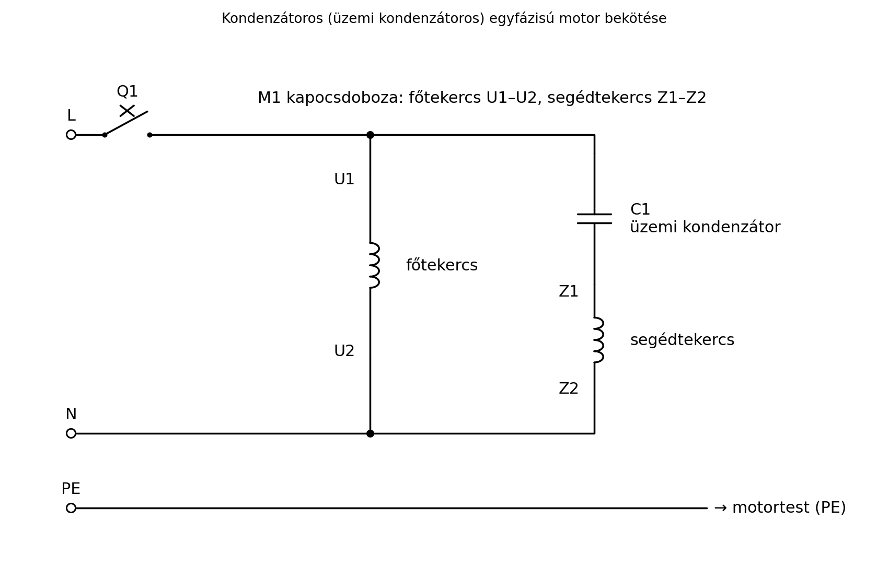

A háztartási és kisipari fogyasztók zöme – hűtő, mosógép, szellőzőventilátor, kompresszor, kézi szerszám, kerti vízpumpa – egyfázisú hálózatról üzemel. Ha ilyen motort kell bekötnöd, javítanod vagy kicserélned, nem elég tudnod, hogy „van benne kondenzátor”: értened kell, hogyan jön létre a forgó mágneses mező, miért van két tekercscsatlakozás, hogyan változtatható a forgásirány, és mi történik, ha a kondenzátor vagy a centrifugál kapcsoló meghibásodik. Ez az alfejezet a gyakorlatban leggyakoribb egyfázisú aszinkron motorokkal foglalkozik: a kondenzátoros és az árnyékolt pólusú motorral.
Mire jó ez a munkahelyen? Egy kondenzátoros motor bekötésénél a legkisebb tévedés is azt eredményezheti, hogy a motor nem indul, túlmelegszik, vagy rossz irányba forog. A hibakeresésnél pedig gyakran nem a motor, hanem a kondenzátor vagy a kapcsoló a ludas – ezt méréssel kell elkülöníteni.
Képzelj el egy régi, de szép asztali ventilátort. Bekapcsolás után zúg, a tengelye rezeg, de nem forog. Ha kézzel meglökjük, néha elindul, máskor nem. Ez a tipikus kondenzátorhiba képe. A motor nem tud önállóan elindulni, mert hiányzik a segédfázis árama, amely a forgó mezőt elindítaná. Ilyen esetben a szerelő nem azonnal a motort bontja, hanem előbb a kondenzátort méri.
A háromfázisú aszinkron motornál a három, térben 120°-kal eltolt tekercsben folyó, időben is 120°-kal eltolt áramok eleve forgó mágneses mezőt hoznak létre. Az egyfázisú motornál viszont csak egy váltakozó áramú tekercs van – vagy annak különböző részei –, így a gerjesztés csak lüktető, nem forgó mezőt kelt. Egy lüktető mező két, ellentétes irányban forgó, azonos nagyságú mező összegére bontható. Álló forgórésznél a két forgó mező nyomatéka éppen kiejti egymást, ezért a motor nem indul el.
Ahhoz, hogy a motor elinduljon, legalább két, térben eltolt tekercsen időben eltolt (fázisban eltolt) áramot kell átvezetnünk. Ezt szolgálja a segédfázis vagy indítótekercs. A két tekercs árama közötti fáziseltolást leggyakrabban kondenzátor hozza létre. A motor elindulása után a segédfázist sok esetben kiiktatják, de vannak üzemi kondenzátoros motorok is, ahol a segédfázis állandóan be van kapcsolva.
Megjegyzés. A kondenzátor fázistoló szerepe közvetlenül a Kondenzátorok kapcsolása és az RC-tag alfejezetben tanult váltakozó áramú kondenzátor-viselkedésre épül. A kondenzátor árama -kal siet a feszültségéhez képest, így a segédtekercsben folyó áram időben eltolódik a főtekercs áramához képest.
A motor állórészében két tekercs van:
A forgórész kalickás (rövidre zárt) forgórész, mint a háromfázisú aszinkron motornál. A segédtekercs és a főtekercs együtt olyan, mint egy aszimmetrikus kétfázisú motor, amely elegendő indítónyomatékot ad.
A kondenzátor kapcsolása szerint két alaptípust különböztetünk meg:
Létezik indító- és üzemi kondenzátoros motor is (két kondenzátorral), ahol a nagyobb kapacitású indítókondenzátort a centrifugál kapcsoló lekapcsolja, az üzemi kondenzátor viszont folyamatosan ellátja a segédtekercset.
Az indítókondenzátor nagy kapacitású, rövid üzemidejű elektrolitikus vagy fóliás AC-kondenzátor. Az üzemi kondenzátor kisebb kapacitású, folyamatos üzemű fóliakondenzátor. A rossz kondenzátor a leggyakoribb egyfázisú motorhiba.
Figyelem. A motor kondenzátorát mindig a motorgyártó által megadott típusra és feszültségre cseréld. A kapacitás eltérése megváltoztatja a segédfázis áramát: túl nagy kapacitás túlmelegíti, túl kicsi csökkenti az indítónyomatékot.
A két kondenzátortípust és a kondenzátor biztonságos kisütését a következő ábra mutatja. Az üzemi kondenzátor (a) burkolatán olvasható a kapacitás tűréssel, a névleges váltakozó feszültség és a frekvencia; alján rögzítőcsap van. Az indítókondenzátor (b) nagyobb kapacitású, de csak rövid idejű üzemre készül. A (c) rész a helyes eljárást mutatja: a feszültségmentesített motor kondenzátorát szigetelt kisütő ellenállással sütjük ki, majd multiméterrel ellenőrizzük, hogy a kapcsain 0 V van; a (d) rész a tilos megoldást, a csavarhúzós rövidre zárást.
Csere előtt a régi kondenzátor feliratáról jegyezd fel a kapacitást és a névleges feszültséget; az új legalább ugyanakkora feszültségre készüljön, kapacitása pedig egyezzen. A feliratok az ábrán csak példák. A HTML-kiadásban a négy panel külön nagyítható.
Az alábbi kapcsolási rajz egy indítókondenzátoros, centrifugál kapcsolóval ellátott motort mutat.
Az ábrán a motor két tekercse külön látszik: a főtekercs (U1–U2) közvetlenül L és N között, a segédtekercs (Z1–Z2) a kondenzátorral és a centrifugál kapcsolóval sorban, a főtekerccsel párhuzamosan; a motortest a PE-re csatlakozik. A gyakorlati rajzokon gyakran egyetlen motorjelképpel és a kondenzátorral egyszerűsítik ugyanezt.
A forgásirány meghatározásához a fő- és segédtekercs áramának fázissorrendjét kell megcserélni. A legegyszerűbb módja, ha a segédtekercs csatlakoztatását megfordítjuk. Ekkor a segédtekercs árama fázisban ellenkező irányú lesz a főtekercshez képest, és a motor ellenkező irányba indul. A főtekercs bekötését nem cseréljük.
Gyakorlatban ez azt jelenti, hogy a segédtekercs sorkapcsok jelölését (pl. Z1, Z2) felcseréljük. A főtekercs kapcsait U1-nel és U2-vel, a segédtekercs kapcsait Z1-gyel és Z2-vel jelölik. A motorvédőt (hővédelmet) a közös fázisvezetőbe, mindkét tekercság elé kapcsoljuk (L → motorvédő → U1 és a kondenzátoros ág közös pontja), hogy a segédág is védett legyen; a beépített tekercshővédő bekötését a gyártói rajz adja meg.
A pontos bekötést az alábbiak szerint ellenőrizd:

A gyakorlatban a motor adattáblája és a csatlakozódoboz felirata mindig elsődleges. Ha a felirat hiányzik, a tekercspárok ellenállásméréssel azonosíthatók: a főtekercs általában kisebb ellenállású, a segédtekercs nagyobb.
A következő ábra egy üzemi kondenzátoros motort mutat kívülről és a kapocsdoboz bekötését. Az (a) részen a kondenzátor (1) a kapocsdobozra (2) van szerelve, adatai az adattáblán (3) is szerepelnek. A (b) részen a hálózat L ere az U1, az N ere az U2 kapocsra kerül, a kondenzátor az U1 és a Z1 kapocs közé van kötve, a segédtekercs másik vége (Z2) híddal az U2-re; a PE a PE-csavarra. A (c) rész az ellenkező forgásirányt mutatja: a segédtekercs két vége helyet cserél – a kondenzátor most az U1 és a Z2 közé, a híd a Z1 és az U2 közé kerül –, a főtekercs és a betáplálás változatlan.

A kapocskiosztás gyártónként eltér, ezért mindig a dobozfedél belső rajza és a gyártói kapcsolási rajz az irányadó; az ábra a fenti két kapcsolási rajz egy lehetséges fizikai megvalósítása. A HTML-kiadásban a két bekötés között válthatsz.
Az árnyékolt pólusú (spalt) motor a legegyszerűbb és legolcsóbb egyfázisú aszinkron motor. Nincs benne kondenzátor, nincs centrifugál kapcsoló, és a forgásiránya is csak a gyártásnál változtatható. Az állórész pólusain egy rövidre zárt rézgyűrűt (árnyékoló menetet) helyeznek el. Ez a gyűrű késlelteti a pólus árnyékolt részének mágneses fluxusát, így a pólus szélén fázisban eltolt fluxus jön létre. Ez a kis aszimmetria elegendő ahhoz, hogy a mező „végigsöpörjön” a póluson, és a kalickás forgórész elinduljon.
Az árnyékolt pólusú motor jellemzően kis teljesítményű (néhány watt – néhány 100 W), alacsony hatásfokú, de egyszerű és csendes. Tipikus alkalmazásai: kis ventilátorok, mikrohullámú sütő tányérforgatója, hűtőgép-ventilátorok, kis szivattyúk (pl. mosogatógép-ürítő).
Felépítését a következő ábra mutatja: a lemezelt vasmagot (1) egyetlen gerjesztőtekercs (2) gerjeszti, a két pólus a kalickás forgórész (4) két oldalán áll, és mindkét pólus egyik szélét egy rövidre zárt rézgyűrű (3) öleli körül. A forgórész mindig az árnyékolatlan pólusrész felől az árnyékolt felé forog (5).

Mivel a forgásirányt a gyűrűk helye szabja meg, bekötéssel nem lehet megfordítani. Ha egy ilyen motor zúg, de nem indul, gyakori ok a beszorult vagy kiszáradt csapágy, ritkábban a szakadt árnyékoló gyűrű. A HTML-kiadásban a részek rámutatásra kiemelődnek.
Megjegyzés. Az árnyékolt pólusú motornál a fáziseltolt fluxusnak ugyanaz a szerepe, mint a kondenzátoros motornál: indítónyomatékot hoz létre. A kalickás forgórész itt is ugyanúgy működik, mint a Szerkezet és működési elv, forgó mágneses mező alfejezetben tárgyalt motoroknál.
Az egyfázisú motorok indítása attól függ, hogy a motor milyen segédfázist használ.
Szabály. Az egyfázisú motor indítónyomatéka a segédtekercs térbeli és időbeli eltérésétől függ. Minél jobban megközelíti a 90°-os térbeli és időbeli eltérést, annál jobb a forgómező-képzés. A kondenzátor áramának fáziseltolása éppen ezt az időbeli eltérést hozza létre. A gyakorlatban a kondenzátor értékét a gyártó úgy méretezi, hogy a segédtekercs árama kb. 90°-kal siessen a főtekercs áramához viszonyítva.
Figyelem. A kondenzátor értékét ne változtasd meg önkényesen. Ha nagyobb kapacitást teszel, a segédtekercs árama nő, a motor túlmelegszik. Ha kisebbet, az indítónyomaték csökken, és a motor nehezen indul.
Az üzemi kondenzátor váltakozó áramú viselkedését a Kondenzátorok kapcsolása és az RC-tag alapján számolhatjuk. A kondenzátor árama:
Példa 1. Egy 230 V, 50 Hz hálózati feszültségű, üzemi kondenzátoros motornál a kondenzátor kapacitása . Mekkora áram folyik a kondenzátoron?
Adott: , , .
Keresett: .
Képlet: .
Behelyettesítés: .
Számítás: .
Ellenőrzés: A meddő teljesítmény . Ez jóval kisebb, mint a motor néhány száz wattos teljesítménye, ami egy ilyen kisméretű üzemi kondenzátorra reális.
Példa 2. Egy indítókondenzátoros motornál az indítókondenzátor . Mekkora áramot venne fel a kondenzátor önmagában, ha feszültségre kapcsoljuk? (Ez felső becslés a segédtekercs áramára: a segédtekerccsel sorban a tényleges áram kisebb.)
Adott: , , .
Keresett: .
Behelyettesítés: .
Számítás: .
Ellenőrzés: A segédtekercs ellenállása (a fejezet szerint 20–50 Ω) sorban van a kondenzátorral, ezért a tényleges áram kisebb: például 30 Ω-nál és (a tekercs induktivitását elhanyagolva; ). Ez az áram nagyobb, mint a motor névleges árama lehet, ami indításkor elfogadható, hiszen az indítókondenzátor csak rövid ideig van bekapcsolva. A centrifugál kapcsoló ezután lekapcsolja.
Hibás példa. Ha valaki a 4 µF-os üzemi kondenzátort 100 µF-os indítókondenzátorra cseréli, a segédtekercsben folytonosan nagy áram fog folyni, ami rövid időn belül túlmelegíti a motort. A cseréhez az adattábla és a gyártói adatlap ismerete szükséges.
Szabvány. Az egyfázisú aszinkron motorokra is a villamos forgógépek általános előírásai vonatkoznak. Az MSZ EN 60034 sorozat (a villamos forgógépek névleges adatai és teljesítménye) ad iránymutatást a kapocstábla adataihoz, a veszteségekhez és a hatásfok osztályokhoz. A motor védettségére az MSZ EN 60529 (IP-kód) vonatkozik. A motorvédő kapcsolókra, mágneskapcsolókra és hőkioldókra az MSZ EN 60947 sorozat vonatkozik. A gépek villamos berendezéseire – ha a motor egy gépi berendezés része – az MSZ EN 60204-1 érvényes. A pontos kapcsolási rajzot és a csatlakozódoboz feliratait mindig a motorgyártó dokumentációja adja meg. (ellenőrizendő: aktuális szabványkiadás)
Egy szerviztechnikus egy hűtőkamra szellőzőmotorját hozza be javításra. A motor zúg, erősen melegszik, és nem indul el. A szerelő megméri a kondenzátort, és az értéke a névleges 6 µF helyett 1,5 µF. A kondenzátor tehát „kiöregedett”. A csere után a motor elindul, de a szerelő észreveszi, hogy a forgásirány nem megfelelő. A motor a levegőt befelé fújja, nem kifelé. A megoldás: a segédtekercs két kivezetését (Z1 és Z2) a kapocstáblán felcseréli a főtekercshez képest; a kondenzátor a segédtekerccsel sorban marad, így a segédtekercs árama a főtekercséhez képest ellenkező irányú fázistolást kap. (A kondenzátor két kivezetésének felcserélése nem változtatna a forgásirányon.) A motor most már a kívánt irányba forog.
Tanulság: a kondenzátorhiba és a forgásirányprobléma gyakran együtt fordul elő. A kondenzátor cseréje után mindig ellenőrizni kell a forgásirányt is.
Cél: Kondenzátoros, egyfázisú aszinkron motor bekötése, forgásirányváltás és a kondenzátor ellenőrzése.
Eszközök és anyagok: kétpólusú feszültségvizsgáló (MSZ EN 61243-3; ellenőrizendő: aktuális kiadás), digitális multiméter (CAT III), kapacitásmérő (vagy multiméter kapacitásmérés funkcióval), szigetelési ellenállás-mérő, csavarhúzókészlet, érvéghüvely, a motor kapcsolási rajza, az adattábla fényképe.
Biztonsági korlát. A feladat tanműhelyi (törpefeszültségű) környezetre vagy jogosult oktató felügyeletére vonatkozik; hálózati feszültségen önállóan ne végezd.
Az öt biztonsági szabály minden mérés előtt:
Lépések:
Ellenőrzési pontok:
Tipikus hibák:
Dokumentálás: A bekötést a kapcsolási rajzon rögzítsd, fényképpel és a mért értékekkel (kondenzátor, ellenállások, üzemi áram) együtt.
1. feladat (A) Sorold fel az egyfázisú aszinkron motor két legfontosabb típusát, és írd le a különbségüket.
2. feladat (A) Egy 6 µF-os fóliakondenzátort 230 V, 50 Hz hálózatra kapcsolunk. Mekkora a kondenzátor árama?
3. feladat (B) Egy indítókondenzátoros motor indítókondenzátora 80 µF. Mekkora áramot venne fel a kondenzátor önmagában 230 V, 50 Hz-en? Miért csak felső becslés ez a segédtekercs áramára, ha a kondenzátor a segédtekerccsel sorban van?
4. feladat (B) Rajzold le egy indítókondenzátoros, centrifugál kapcsolóval ellátott motor kapcsolási rajzát. Jelöld a főtekercs (U1–U2), a segédtekercs (Z1–Z2), a kondenzátor és a centrifugál kapcsoló szerepét.
5. feladat (C) Egy szervizben egy mosógép motorja nem indul. A kondenzátor kapacitásmérésen a névleges 12 µF helyett 3 µF-ot mutat. Magyarázd el, miért nem indul a motor, és milyen további vizsgálatot végeznél.
6. feladat (D) Egy üzemi kondenzátoros ventilátormotor gyenge légáramot ad. A kondenzátor mért értéke 7 µF, a névleges 8 µF. A motor árama 0,75 A, a névleges 0,9 A. Hogyan döntesz a kondenzátor cseréjéről? Milyen mérést végeznél még?
Önellenőrzés – válaszok
1. feladat (A) megoldása
A kondenzátoros motor (indító- vagy üzemi kondenzátoros) és az árnyékolt pólusú motor. A kondenzátoros motornál a segédtekerccsel sorba kötött kondenzátor hozza létre a fáziseltolást. Az árnyékolt pólusú motornál a póluson lévő rövidre zárt rézgyűrű késlelteti a fluxust a pólus egy részén, ami elegendő a forgó mezőhöz kis teljesítménynél.
2. feladat (A) megoldása
Adott: , , .
Képlet: .
Behelyettesítés: .
Számítás: .
Ellenőrzés: A kondenzátor meddő árama ésszerű: a kisméretű üzemi kondenzátorok árama tizedamper nagyságrendű.
3. feladat (B) megoldása
Adott: , , .
Képlet: .
Behelyettesítés: .
Számítás: .
Ellenőrzés: Ez a kondenzátor önálló árama, felső becslés: a segédtekercs (pl. 30 Ω) sorban van, ezért a tényleges áram kisebb (, , a tekercs induktivitását elhanyagolva). Az áram így is nagyobb lehet a motor névleges áramánál. Indításkor rövid ideig ilyen áram is folyhat, ezért az indítókondenzátor csak rövid bekapcsolásra készül.
4. feladat (B) megoldása
A kapcsolási rajzot a 26.6.4 alszakasz indítókondenzátoros rajza mutatja. A főtekerccsel sorba a hálózat, a segédtekerccsel sorba a kondenzátor és a centrifugál kapcsoló van. A centrifugál kapcsoló nyugalmi (álló motornál) zárt, a fordulatszám növekedésével bontja az áramkört, így lekapcsolja a segédkört.
5. feladat (C) megoldása
A mosógép motorja azért nem indul, mert a kondenzátor kapacitása a névleges 12 µF helyett 3 µF, ami nem ad elég fáziseltolást a segédtekerccsel, így nincs indítónyomaték. A további vizsgálat:
6. feladat (D) megoldása
A kondenzátor 7 µF a névleges 8 µF-hoz képest: ez kb. 12,5 % eltérés, ami a megengedett tűrésen (ált. ±5–10 %) kívül esik, tehát a kondenzátor valószínűleg kiöregedett. A csökkent kapacitás miatt a segédtekerccsel soros kör reaktanciája nő, a segédtekerccsel folyó áram csökken, így a motor légteljesítménye gyenge, a motor árama is csökken. A kondenzátor cseréjét javaslom. Mérések: kapacitásmérés, szigetelési ellenállás mérés, üzemi áram mérése a csere után.
Az egyfázisú aszinkron motor önállóan nem indul, mert egyfázisú tekercs lüktető mezejéből nem jön létre forgó mező. A forgás megindításához segédfázis szükséges. A kondenzátoros motornál a segédtekerccsel sorba kötött kondenzátor időbeli fáziseltolást hoz létre. Az indítókondenzátoros motornál a kondenzátort centrifugál kapcsoló iktatja ki; az üzemi kondenzátoros motornál a kondenzátor állandóan be van kapcsolva. A forgásirány a segédtekercs csatlakozóinak (Z1–Z2) felcserélésével változtatható, nem a hálózati fázis-nulla felcserélésével. Az árnyékolt pólusú motor a póluson elhelyezett rövidre zárt rézgyűrűvel kelt fáziseltolt fluxust, így kis teljesítményű ventilátorokban használatos. A leggyakoribb hiba a kondenzátor kapacitásvesztése, amely a motor indításaképtelenségéhez vezet. A hibakeresés során mindig előbb a kondenzátort, a centrifugál kapcsolót és a tekercsek ellenállását mérjük. A motor specifikációját mindig az adattáblája és a gyártói dokumentáció határozza meg.
A leírt kapcsolások és összefüggések az elektrotechnika klasszikus alapelvein nyugszanak. A motorok névleges adatai, a kondenzátor értékei, a kapocstábla-jelölések, a szigetelési ellenállás határértékei és az IP-védettség a mindenkori gyártói adatoktól és a hatályos szabványoktól függenek. A szabványhivatkozások (MSZ EN 60034, MSZ EN 60529, MSZ EN 60204-1, MSZ EN 60947) iránymutatók; a pontos szakasz- és táblázatszámok, valamint a hatályos kiadások ellenőrzendők.